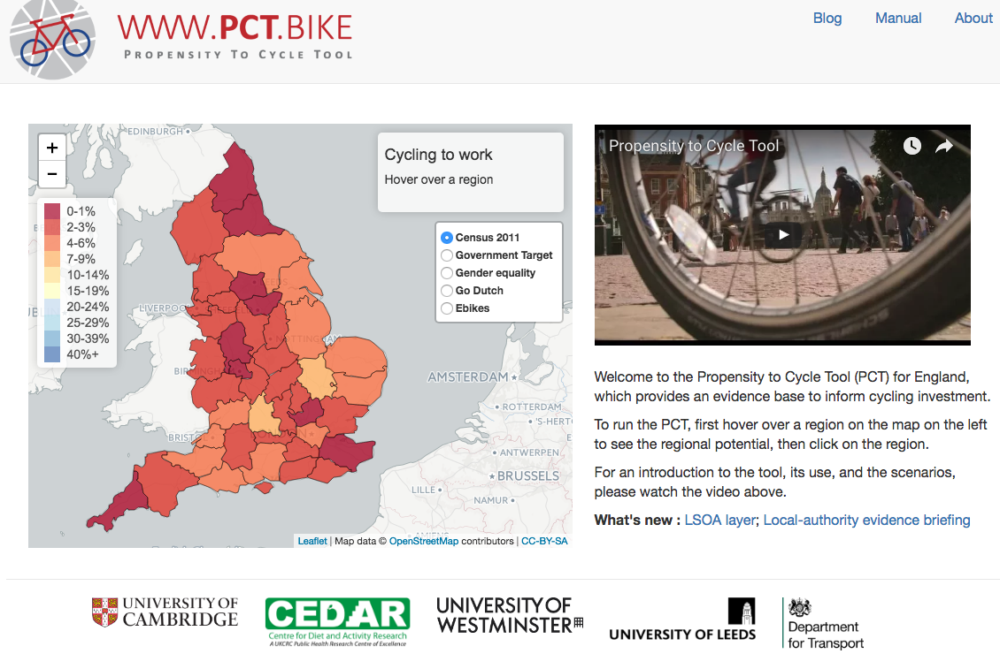
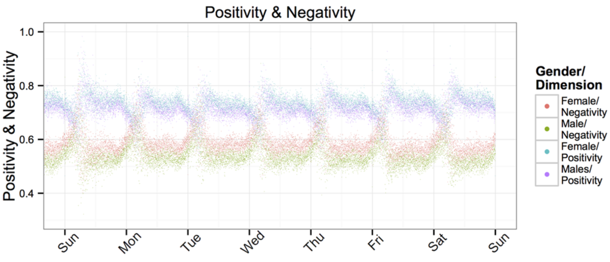

Open and reproducible science with R
Scott Chamberlain (@sckottie/@ropensci)
UC Berkeley / rOpenSci


scotttalks.info/uofo
LICENSE: CC-BY 4.0
open science/research
open science is badly needed
Retractions

science should be reproducible!
but doing for real is another issue
100 psychology studies

Emergent findings
open data can make a new finding possible
Open science as a lego set

Open science as a lego set
open science may be hard to do
but - you can work on different components
and - individual components are useful on their own
you don't need to do it all at once
Open science components
Open Data
make your data open
funders/journals often requiring this anyway
future self will thank you
Open Access
make your papers open
funders often requiring this anyway
talk to your librarians!
Versioning: code/data/text

Versioning: code/data/text
failure proofs your work
experiment freely!
Do all work programatically

from geeksaresexy.net/2012/01/05/geeks-vs-non-geeks-picture
Do all work programatically
Key to reproduciblity
Most important person that wants to reproduce your work is you!
Do all work programatically
you and yourself
- one week from now
- two months from now
- & so on
scientific programming languages
are:
the canvas on which to do science
important scientific programming languages


Jupyter Notebooks

reproducing a Jupyter notebook

reproducing a Jupyter notebook

something similar in R: Rmarkdown

R language
used widely in biology, psychology, medicine, etc.
rapidly growing user base, companies surrounding it
includes all tools for open science workflow
though work to be done ...
Open science ecosytsem

rOpenSci does:
rOpenSci staff
ropensci.org/about/#staff
4 full time
now including a community manager!
leadership team
advisory board
the research workflow
Data acquisition
data manipulation/analysis/viz
writing
publish
the research workflow
Data acquisition
data manipulation/analysis/viz
writing
publish
the research workflow
Data acquisition
data manipulation/analysis/viz
writing
publish
the research workflow
Data acquisition
data manipulation/analysis/viz
writing
publish
the research workflow
Data acquisition
data manipulation/analysis/viz
writing
publish
We make data driven stories easier to tell
here are some stories ...
use case 1
http://pct.bike


use case 2



use case 3: OKMaps

rOpenSci Tools
rOpenSci Tools
Data Publication | Data Access |
Literature
| Altmetrics | Scalable & Reproducible Computing | Databases | Data Vizualization | Image Processing | Data Tools | Taxonomy | HTTP tools | Geospatial | Data AnalysisrOpenSci Tools
Data Publication | Data Access |
Literature
| Altmetrics | Scalable & Reproducible Computing | Databases | Data Vizualization | Image Processing | Data Tools | Taxonomy | HTTP tools | Geospatial | Data AnalysisrOpenSci Literature Tools
Public Library of Science
using rplos we can access metadata and fulltext for any PLOS article
install rplos like
install.packages("rplos")
Exercise
- Create a
.Rmdfile - Use
rplosto get fulltext for 100 articles
-calculate number of authors per article
-make a simple plot of authors per article - Render the
.Rmdto.html - Send the
.Rmdversion to your partner via email - Render the
.Rmdfile you received - Does your
.htmllook the same?
Wrap Up
Open science is essential
Open science tools are useful on their own
rOpenSci: one of the tool makers
Challenges going forward
Largely cultural - will slowly change
Wrap Up
rOpenSci is a community project
Let us know what you need
Help us make better tools